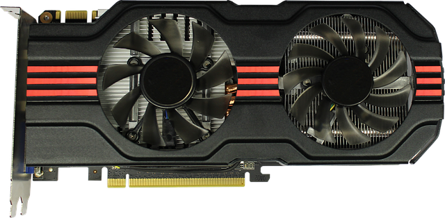

Ett grafikkort omvandlar det binära data från moderkortet till bilder som kan kan se på
datorskärmen. Grafikkortet använder sig av fyra huvudkomponenter, den
får sin kraft av moderkortet, processorn avgör vad som händer med pixlarna,
minnet håller information om pixlarna och tillslut finns det bildskärmen som ger
oss en bild av resultatet. Men det finns en sak till som oftast används i cad
och spel t.ex rastrering fyller i pixlarna och den används för att göra 3D-grafik
i bilde De populäraste grafikkort är gjorda av nvidia och intel, De nya grafikkort
används oftast i spel men du måste också ha en kraftfull dator som kan använda
grafikkortet. Om du vill ha en grafikkort för spel, då köper en ny från Nvidia
eller Intel men annars kan du köpa äldre grafikkort som t.ex GT710.
Den viktigaste delen grafikkortet är gjort av heter grafikprocessor och den
sckikar signaler från datorn till bildskärmet, man kan säga att den fungerar
som processorn för en dator.